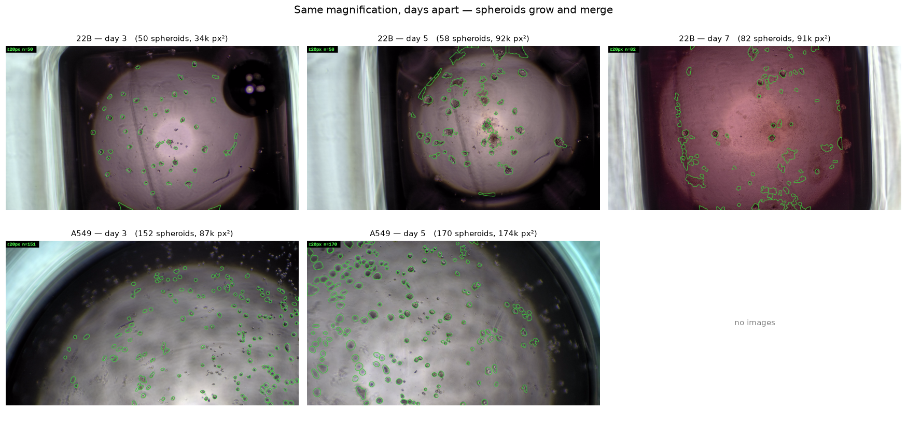
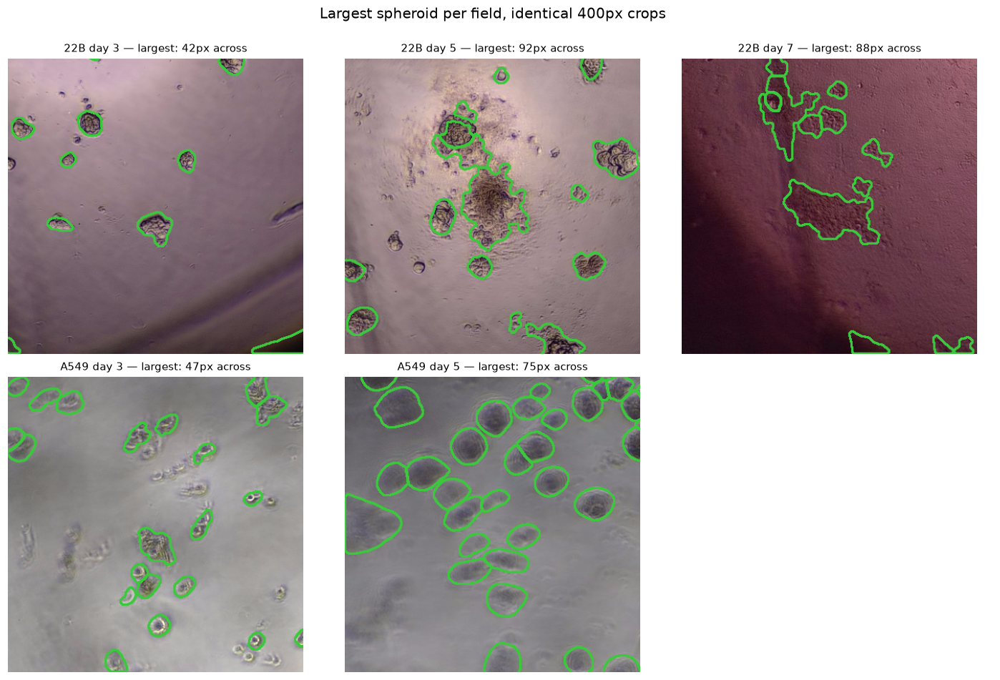
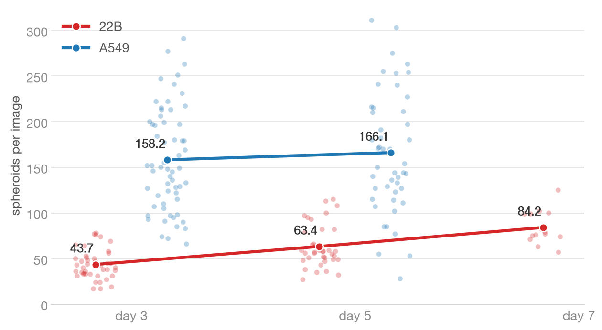
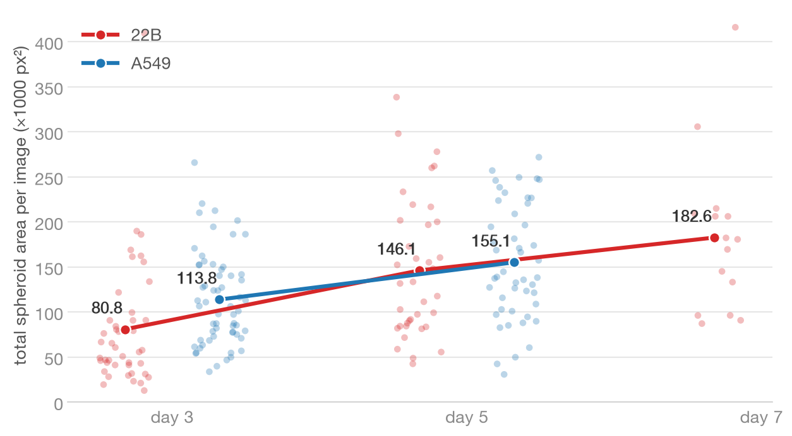
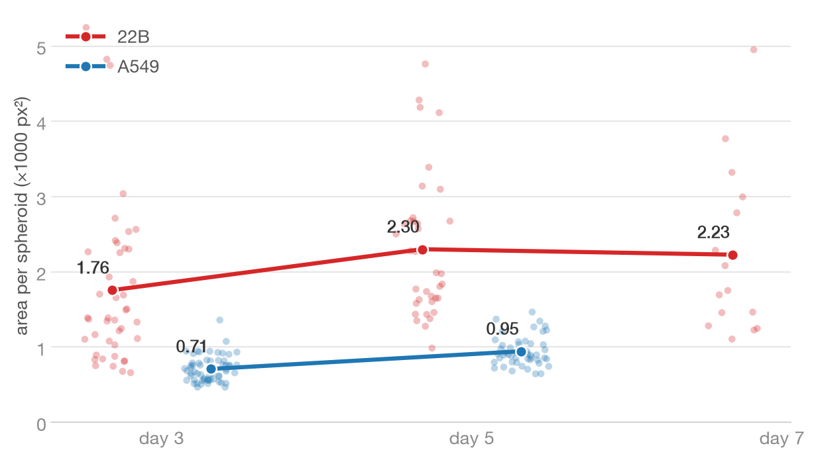
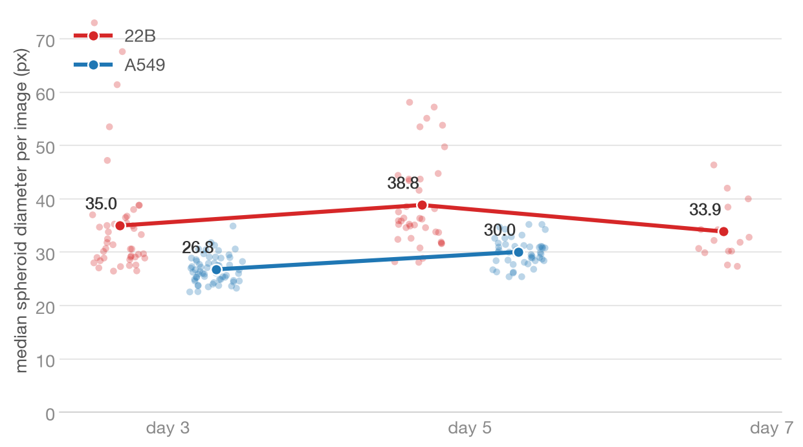
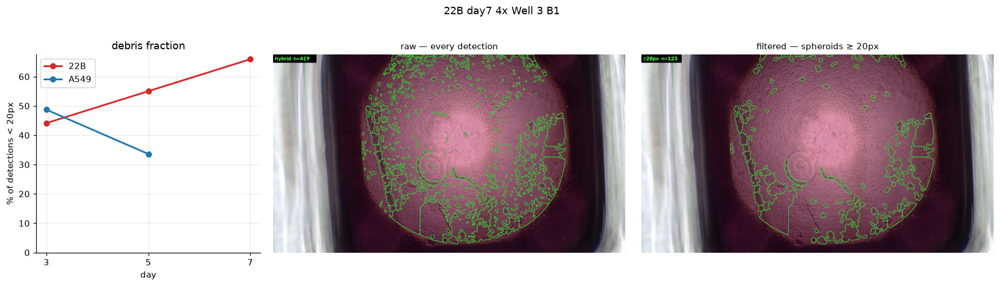
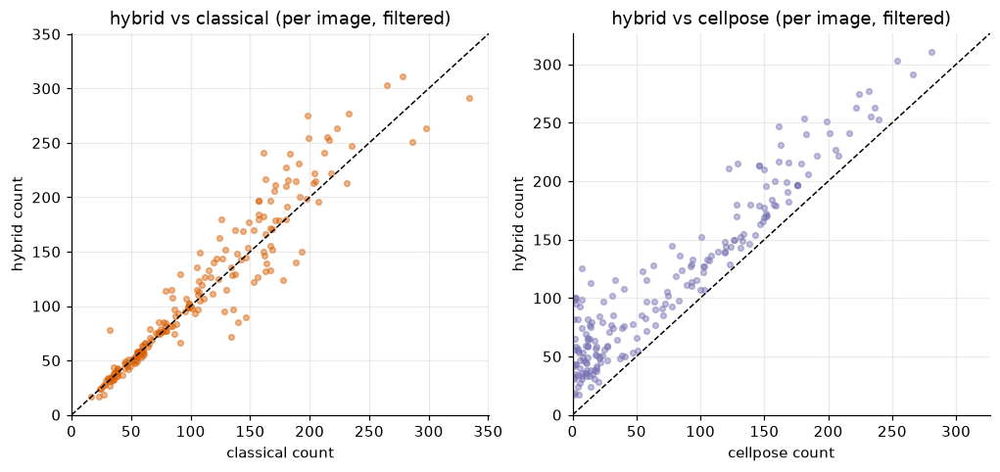

<title>Watching Spheroids Grow</title>
<style>
  :root {
    --bg: #f7f8f6;
    --surface: #ffffff;
    --ink: #1e2522;
    --muted: #5c6763;
    --accent: #14735a;
    --accent-soft: #e3efe9;
    --border: #dfe4df;
    --code-bg: #eef1ee;
  }
  @media (prefers-color-scheme: dark) {
    :root:not([data-theme="light"]) {
      --bg: #131715; --surface: #1b201d; --ink: #e6eae7; --muted: #98a29c;
      --accent: #4dc59a; --accent-soft: #1e2f28; --border: #2b322e;
      --code-bg: #242b27;
    }
  }
  :root[data-theme="dark"] {
    --bg: #131715; --surface: #1b201d; --ink: #e6eae7; --muted: #98a29c;
    --accent: #4dc59a; --accent-soft: #1e2f28; --border: #2b322e;
    --code-bg: #242b27;
  }
  * { box-sizing: border-box; }
  body {
    margin: 0; background: var(--bg); color: var(--ink);
    font: 17px/1.65 Charter, "Iowan Old Style", Georgia, serif;
  }
  header, main { max-width: 900px; margin: 0 auto; padding: 0 24px; }
  header { padding-top: 56px; }
  .eyebrow {
    font-family: "Avenir Next", "Segoe UI", system-ui, sans-serif;
    font-size: 12px; letter-spacing: 0.14em; text-transform: uppercase;
    color: var(--accent); font-weight: 600;
  }
  h1 {
    font-family: "Avenir Next", "Segoe UI", system-ui, sans-serif;
    font-size: clamp(30px, 5vw, 44px); line-height: 1.12; margin: 10px 0 8px;
    text-wrap: balance; font-weight: 700;
  }
  .standfirst { font-size: 19px; color: var(--muted); max-width: 62ch; margin: 0 0 18px; }
  .meta {
    display: flex; flex-wrap: wrap; gap: 8px; margin: 18px 0 0;
    font-family: "Avenir Next", "Segoe UI", system-ui, sans-serif; font-size: 13px;
  }
  .meta span {
    background: var(--accent-soft); color: var(--accent); border-radius: 999px;
    padding: 3px 12px; font-weight: 600;
  }
  main { padding-bottom: 80px; }
  h2 {
    font-family: "Avenir Next", "Segoe UI", system-ui, sans-serif;
    font-size: 24px; margin: 52px 0 6px; text-wrap: balance;
  }
  h2 + p { margin-top: 6px; }
  p { max-width: 68ch; }
  hr { border: 0; border-top: 1px solid var(--border); margin: 56px 0 0; }
  figure { margin: 26px 0; }
  figure img {
    width: 100%; height: auto; display: block; border-radius: 6px;
    border: 1px solid var(--border); background: #fff;
  }
  figcaption {
    font-family: "Avenir Next", "Segoe UI", system-ui, sans-serif;
    font-size: 13.5px; color: var(--muted); margin-top: 10px; line-height: 1.5;
  }
  figcaption b { color: var(--ink); }
  .tablewrap { overflow-x: auto; margin: 24px 0; }
  table {
    border-collapse: collapse; width: 100%; background: var(--surface);
    font-family: "Avenir Next", "Segoe UI", system-ui, sans-serif; font-size: 15px;
    font-variant-numeric: tabular-nums; border: 1px solid var(--border);
    border-radius: 8px; overflow: hidden;
  }
  th, td { padding: 10px 16px; text-align: left; border-top: 1px solid var(--border); }
  thead th {
    background: var(--accent-soft); color: var(--accent); border-top: 0;
    font-size: 12.5px; letter-spacing: 0.06em; text-transform: uppercase;
  }
  .dim { color: var(--muted); font-weight: 400; }
  ul { padding-left: 22px; max-width: 68ch; }
  li { margin: 6px 0; }
  li::marker { color: var(--accent); }
  code {
    font: 14px/1.5 ui-monospace, "SF Mono", Menlo, monospace;
    background: var(--code-bg); border-radius: 4px; padding: 1px 6px;
  }
  pre {
    background: var(--code-bg); border: 1px solid var(--border); border-radius: 8px;
    padding: 14px 18px; overflow-x: auto;
  }
  pre code { background: none; padding: 0; }
  .note {
    border-left: 3px solid var(--accent); background: var(--surface);
    padding: 12px 18px; border-radius: 0 8px 8px 0; margin: 24px 0;
    font-size: 15.5px; max-width: 66ch;
  }
  footer {
    max-width: 900px; margin: 0 auto; padding: 24px;
    border-top: 1px solid var(--border); color: var(--muted);
    font-family: "Avenir Next", "Segoe UI", system-ui, sans-serif; font-size: 13px;
  }
</style>

<header>
  <div class="eyebrow">Spheroid Counter · Analysis Report</div>
  <h1>Watching Spheroids Grow</h1>
  <p class="standfirst">A549 and 22B spheroid cultures imaged at 4× on days 3, 5 and 7:
  the cultures grow by individual spheroids getting bigger and merging — not by
  making more of them.</p>
  <div class="meta">
    <span>203 images</span><span>days 3 / 5 / 7</span>
    <span>A549 &amp; 22B</span><span>hybrid engine</span>
    <span>21 August 2026</span>
  </div>
</header>

<main>
  <h2>Key findings</h2>
  <ul>
    <li><b>Spheroid counts stay roughly flat</b> across days for both cell lines
      (A549 even dips slightly as small clumps merge), while <b>total spheroid
      area per field climbs steadily</b> — roughly doubling for 22B between
      day&nbsp;3 and day&nbsp;7.</li>
    <li><b>The average spheroid gets bigger:</b> mean area per spheroid grows
      ≈1.2× for 22B over the four days, and the 90th-percentile
      diameter grows faster than the median — mass concentrates into fewer,
      larger bodies, the signature of growth plus merging.</li>
    <li><b>Raw detector output hides this.</b> Unfiltered, 66% of
      day-7 detections are sub-20&nbsp;px specks (single cells and debris), which
      inflate counts and drag median size down. All numbers here use objects
      ≥&nbsp;20&nbsp;px equivalent diameter.</li>
  </ul>

  <div class="tablewrap">
    <table>
      <thead><tr><th>mean count / total area per field</th>
        <th>day 3</th><th>day 5</th><th>day 7</th></tr></thead>
      <tbody>
        <tr><td><b>22B</b></td><td><b>44</b> <span class=dim>/</span> 81k px²</td><td><b>63</b> <span class=dim>/</span> 146k px²</td><td><b>84</b> <span class=dim>/</span> 183k px²</td></tr>
        <tr><td><b>A549</b></td><td><b>158</b> <span class=dim>/</span> 114k px²</td><td><b>166</b> <span class=dim>/</span> 155k px²</td><td class=dim>not imaged</td></tr>
      </tbody>
    </table>
  </div>

  <h2>Seeing it: one field per day</h2>
  <p>Representative fields (median spheroid count for their group), same
  magnification throughout, detected spheroids outlined in green. The outlined
  objects get visibly larger, and by day&nbsp;7 the 22B detections are large
  irregular masses rather than discrete dots.</p>
  <figure>
    
    <figcaption><b>Fig 1 — Representative fields.</b> Rows: cell lines; columns:
    days. Banner shows the filtered spheroid count. The occasional outline along a
    dark well edge is a detector artifact; it is excluded from Fig&nbsp;2 and noted
    in Limitations.</figcaption>
  </figure>

  <figure>
    
    <figcaption><b>Fig 2 — Largest spheroid of each field, identical 400&nbsp;px
    crops.</b> Because every crop is at the same scale, growth is directly visible:
    22B 45&nbsp;→&nbsp;92&nbsp;→&nbsp;88&nbsp;px across (day-5/7 masses are merged
    aggregates), A549 47&nbsp;→&nbsp;75&nbsp;px.</figcaption>
  </figure>

  <h2>The numbers behind it</h2>
  <p>Each faint dot is one microscope field; the bold line connects the daily
  means (values annotated). All spheroids ≥&nbsp;20&nbsp;px, hybrid engine.</p>
  <figure>
    
    <figcaption><b>Fig 3 — Spheroids per image.</b> Counts stay in a narrow band
    for both lines — the cultures are not making more spheroids.</figcaption>
  </figure>
  <figure>
    
    <figcaption><b>Fig 4 — Total spheroid area per image.</b> The same fields'
    total mass climbs steadily — for 22B it more than doubles from day&nbsp;3 to
    day&nbsp;7.</figcaption>
  </figure>
  <figure>
    
    <figcaption><b>Fig 5 — Area per spheroid.</b> Flat counts + rising mass means
    each spheroid is bigger: the cleanest single readout of growth.</figcaption>
  </figure>
  <figure>
    
    <figcaption><b>Fig 6 — Median spheroid diameter per image.</b> The typical
    spheroid grows in diameter as well — size gains are population-wide, not just
    a few giants.</figcaption>
  </figure>

  <h2>Why raw counts are misleading</h2>
  <p>The detector's noise floor is 7&nbsp;px, so raw output also counts single
  cells and debris. That debris fraction explodes with culture age — by day&nbsp;7,
  half of everything detected is a speck. Raw counts therefore <i>rise</i> and raw
  median size <i>falls</i> over time, the opposite of what the spheroids are
  actually doing.</p>
  <figure>
    
    <figcaption><b>Fig 7 — Debris.</b> Left: share of detections under
    20&nbsp;px by day. Right: the densest day-7 field, raw (n=419) vs filtered
    (n=123) — everything that disappears is speckle.</figcaption>
  </figure>

  <h2>Method</h2>
  <p>Detection uses the <code>spheroid-counter</code> hybrid engine (Cellpose&nbsp;4
  masks, with the classical texture/watershed detector filling objects Cellpose
  misses), run over all 203 images via
  <code>data_analysis/run_analysis.py</code>. Per-object measurements
  (104,073 objects, of which 22,954 are spheroid-sized) live in
  <code>results_2026-08-21_11-46-59/combined/results_all_engines.csv</code>; overlays and
  per-engine outputs in <code>classical/</code>, <code>cellpose/</code>,
  <code>hybrid/</code>, <code>combined/</code> inside the same folder.</p>
  <figure>
    
    <figcaption><b>Fig 8 — Engine cross-check</b> (filtered, per-image counts).
    Classical tracks hybrid closely; Cellpose under-detects the large merged
    day-7 spheroids, which is why the hybrid engine is used throughout.</figcaption>
  </figure>

  <h2>Limitations</h2>
  <ul>
    <li><b>Different wells per day.</b> Days 3/5/7 image different wells, so all
      trends are population-level comparisons, not same-spheroid tracking.</li>
    <li><b>178 of 203 images were salvaged</b> from a crashed run by
      reconstructing masks from the saved overlays: counts are exact, but their
      areas/diameters carry a small systematic bias (≈+3–4&nbsp;%). Salvaged rows
      are flagged <code>salvaged=1</code> in the CSVs.</li>
    <li><b>Well-edge artifacts.</b> The detector occasionally outlines the dark
      well rim; these are excluded from Fig&nbsp;2 by shape/brightness criteria
      but still contribute a small amount to area totals.</li>
    <li><b>No physical scale.</b> Sizes are in pixels; pass
      <code>--um-per-px</code> to the pipeline if the 4× scale is calibrated.</li>
    <li><b>A549 has no day-7 images</b> in this dataset.</li>
  </ul>

  <div class="note">
    <b>Reproduce:</b> <code>uv run --project spheroid-counter python
    data_analysis/run_analysis.py</code> regenerates the analysis (resumable,
    checkpointed per image); the companion notebook
    <code>data_analysis/results_visuals.ipynb</code> builds every figure above.
  </div>
</main>

<footer>Generated 21 August 2026 from run <code>results_2026-08-21_11-46-59</code> ·
  spheroid-counter analysis pipeline</footer>
